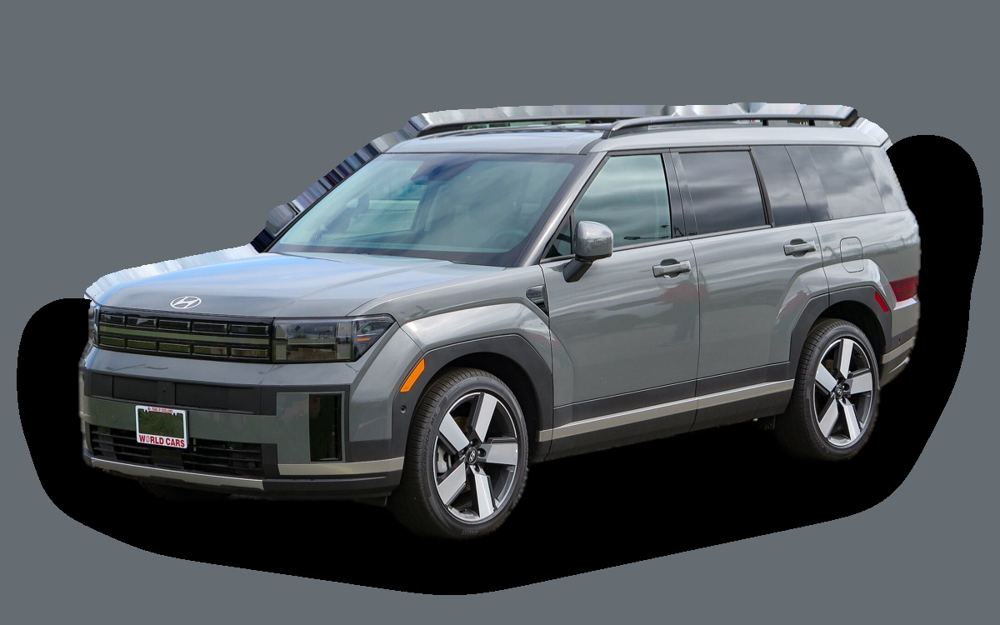

Vad kostar en Hyundai Santa Fe per månad?
En Hyundai Santa Fe från 2026 kostar cirka 7 715 kr i månaden, allt inräknat.


Månadskostnad per årsmodell
| Årsmodell | Version i beräkningen | Pris | Per månad | Betyg |
|---|---|---|---|---|
| 2026 | Laddhybrid 253 AWD, Advanced | 652 600 kr | 7 715 kr | D |
Räknat på 5 års ägande och 1 250 mil per år, med bränslepriser från 2026-10-22. Månadskostnaden innehåller värdeminskning, drivmedel, service och reparationer, försäkring och fordonsskatt.
Så fördelas kostnaden för en 2026:a
- Värdeminskning: 5 125 kr/mån
- Drivmedel: 1 401 kr/mån
- Service och reparationer: 416 kr/mån
- Försäkring: 742 kr/mån
- Fordonsskatt: 30 kr/mån
Leasa eller köpa ny?
Hyundai Privatleasing erbjuder Santa Fe laddhybrid Advanced från 5 995 kr i månaden i 36 månader och 1 000 mil per år. Så mycket kostar det jämfört med att köpa samma bil ny för 652 600 kr och sälja den efter 36 månader, räknat på 1 250 mil per år och 5 procents ränta.
Leasa är billigast 2 389 kr mindre per månad, 86 004 kr på 36 månader.
| Per månad | Leasa | Köpa |
|---|---|---|
| Leasingavgift, 1 250 mil per år | 6 219 kr | – |
| Uppläggnings- och aviavgift | 81 kr | – |
| Värdeminskning | – | 6 018 kr |
| Ränta på pengarna, 5 % | – | 2 268 kr |
| Service och reparationer | ingår | 404 kr |
| Drivmedel | 1 389 kr | 1 389 kr |
| Försäkring | 784 kr | 784 kr |
| Fordonsskatt | 30 kr | 30 kr |
| Totalt per månad | 8 504 kr | 10 893 kr |
| Totalt på 36 månader | 306 144 kr | 392 148 kr |
Du kör 250 mil mer per år än erbjudandet räknar med. Uppskattat pris för fler mil: 224 kr i månaden. Hyundai Privatleasing: Santa Fe laddhybrid Advanced, 36 månader, 1 000 mil per år, service ingår, rörlig avgift som följer räntan. Uppläggningsavgift 795 kr och aviavgift 59 kr i månaden (uppskattat, beloppen står inte i erbjudandet). Källa: hyundai.com, avläst 26 oktober 2026, gäller till och med 31 oktober 2026.
Köpa: 652 600 kr för en ny bil i samma version, och 435 945 kr tillbaka när du säljer den efter 3 år. Restvärdet bygger på annonspriserna för 3 år gamla bilar, justerat för att du kör 3 750 mil på 3 år i stället för typiska 3 000 mil. Räntan är vad pengarna kostar: ränta på ett billån, eller räntan du går miste om på sparade pengar. Drivmedel, försäkring och skatt är desamma. Övermil och onormalt slitage betalas när leasingbilen lämnas tillbaka, och byter du in en köpt bil hos en handlare får du oftast mindre än annonspriset.
Räkna med din egen körsträcka och ränta · Alla leasingbilar jämförda
Begagnatpriser i annonser
| Årsmodell | Medianpris | Annonser | Typiskt miltal |
|---|---|---|---|
| 2026 | 599 900 kr | 5 | 1 000 mil |
| 2025 | 567 500 kr | 22 | 2 000 mil |
| 2024 | 544 900 kr | 6 | 2 200 mil |
Medianpriset i svenska annonser per årsmodell i oktober 2026 (källa: Blocket, AutoUncle, BilKoll). Annonspriser är utgångspriser, och slutpriset kan bli lägre.
Motorer och versioner
| Motor | Drivmedel | Effekt | 0–100 km/h | Förbrukning (WLTP) | Räckvidd | Årsmodeller | Pristillägg |
|---|---|---|---|---|---|---|---|
| Hybrid 215 AWD | Hybrid | 215 hk | 9 s | 6,6 l/100 km | – | 2024–2024 | – |
| Laddhybrid 253 AWD | Laddhybrid | 253 hk | 9,3 s | 2,4 l/100 km + 18 kWh/100 km | – | från 2024 | +100 000 kr |
- Utrustning: Essential, Advanced (+40 000 kr)
Fakta
- Kaross
- SUV
- Årsmodeller
- sedan 2024
- Nypris från
- 652 600 kr
- Bagage
- 725 liter
- Euro NCAP
- inte testad
- Nybilsgaranti
- 5 år
- Driftsäkerhet
- 4 av 5
- Helförsäkring, uppskattning
- 8 600 kr/år
- Service, uppskattning
- 4 200 kr/år
Fördelar och nackdelar
Fördel
Rymlig och kantig, med gott om plats även i tredje raden.
Nackdel
Laddhybriden har kort elräckvidd.
Liknande bilar
 BMW X57 561 kr/mån som 2023:a
BMW X57 561 kr/mån som 2023:a Toyota Land Cruiser8 106 kr/mån som 2026:a
Toyota Land Cruiser8 106 kr/mån som 2026:a Jeep Wrangler Rubicon7 281 kr/mån som 2023:a
Jeep Wrangler Rubicon7 281 kr/mån som 2023:a Volkswagen Touareg7 062 kr/mån som 2023:a
Volkswagen Touareg7 062 kr/mån som 2023:a Mercedes-Benz GLE8 631 kr/mån som 2023:a
Mercedes-Benz GLE8 631 kr/mån som 2023:a Volkswagen Tiguan6 699 kr/mån som 2026:a
Volkswagen Tiguan6 699 kr/mån som 2026:a
Uppdaterad 2026-10-27 · annonsdata okt 2026